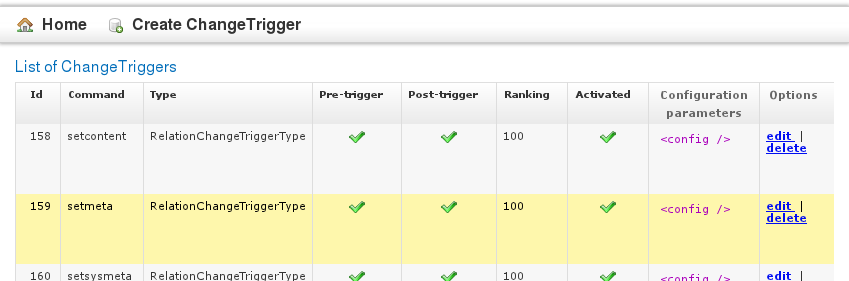

Change Triggers
What are change triggers
Change triggers are blocks of code that are triggered or executed whenever an object in the Cinnamon repository is changed. They can be configured to only be activated on specific types of changes (for example, whenever content is updated, but not when metadata is changed). Change triggers contain mostly custom code and alter the behaviour of the standard Cinnamon server.
Examples of possible change triggers
With change triggers, a programmer can easily add new features and enhance the core API of the server. Examples:
- Lifecycle state audit logs: When a user changes the lifecycle state of a document, store a log message in a separate database table.
- Thumbnail creation: whenever an object of type image is updated with new content, call an external renderer to create a thumbnail image.
- Translation trigger: If a new translation object is created, update its custom metadata.
- Validation: Change triggers can be configured to act before or after the API call which is invoked, and they can prevent a potentially dangerous content operation from taking place. If a user uploads a broken S1000D document which is not even well-formed XML, a validation trigger could catch this problem before a new (broken) version of the object is created.
- Create workflows depending on input: If certain criteria are met, create a new workflow task.
Configuration of change triggers
ChangeTriggerType
A ChangeTriggerType defines a class which is called before and / or after a call to a Cinnamon API method is made. This class is provided with the request parameters as well as the server's response (for postmethod call). It has the following fields:
- name - string, the name of the CTT
- description - a message id (for localized text) or a plain text description
- trigger class - the name of the Java class that will be called with the request (and response) parameters. This class must implement the ITrigger interface.
ChangeTrigger
 A ChangeTrigger object combines the trigger type with a specific Cinnamon API method. It has the following fields (besides the obligatory id and obj_version etc):
- active - boolean value to determine if this trigger is active or not.
- command - the name of the API method, for example "setcontent"
- pre_trigger - boolean value, determines if the ChangeTrigger will be executed before the command is run
- post_trigger - boolean value, determines if the ChangeTrigger will be executed after the command has run
- ranking - integer value, so you can sort ChangeTriggers and choose which is run first. Lower ranking value means higher priority.
- trigger type - foreign key to ChangeTriggerType table. You can use the same type for as many ChangeTriggers as you want, for example to have a specialized logging class store every API method call in the database.